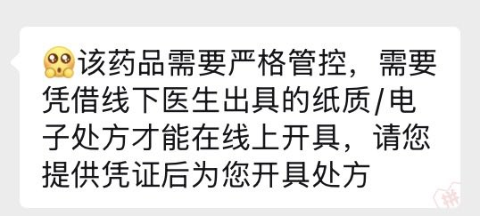

翅翅膀喵
@axzamyzed
@TheSnowWinter 不盖章的基本都是院内购买的不用盖章，需要院外购买的都得盖章
多方位拍照其实可以通过梯度调节解决
九州通是真的纯神经病，感觉他们的系统和拼多多没对接好，就算能开也得换一两个医生
莲藕的有时候盖章了也没法过，极其有毛病
但是医行天下医院的人非常好，还会用表情包，甚至电子的也行

咖喱🍛🏳️⚧️
@TheSnowWinter
1.桃子互联网医院:纯他妈贱，还要处方上面盖章，我他妈精二的处方都是不盖章的，你一个普瑞要啥盖章？
2.莲藕健康互联网医院:挺好的，就是要你多方位拍照一下你的处方
3.鼎康慈桦互联网医院:也挺好的，就是限量，150mg链接只能6盒
4.九州通互联网医院:傻逼不能再傻逼，几个医生不是没电就是断网 https://t.co/t0qYTyuhGe